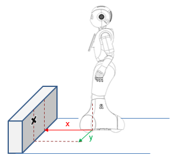

Actuator & Sensor list¶
| Battery - Inertial Sensor - Infra-red - Joints and Actuators - Lasers - LEDs - Power hatch - Sonars - Switches - Touch sensor |
Joints and Actuators¶
|
HeadYaw¶
| Key | See ... |
|---|---|
| Device/SubDeviceList/HeadYaw/Position/Actuator/Value | Position/Actuator (rad) |
| Device/SubDeviceList/HeadYaw/Position/Sensor/Value | Position/Sensor (rad) |
| Device/SubDeviceList/HeadYaw/ElectricCurrent/Sensor/Value | Current (A) |
| Device/SubDeviceList/HeadYaw/Temperature/Sensor/Value | Temperature (°C) |
| Device/SubDeviceList/HeadYaw/Hardness/Actuator/Value | Stiffness (%) |
| Device/SubDeviceList/HeadYaw/Temperature/Sensor/Status | Temperature status |
See also: Head joints, and diagnosis keys on HeadYaw.
HeadPitch¶
| Key | See ... |
|---|---|
| Device/SubDeviceList/HeadPitch/Position/Actuator/Value | Position/Actuator (rad) |
| Device/SubDeviceList/HeadPitch/Position/Sensor/Value | Position/Sensor (rad) |
| Device/SubDeviceList/HeadPitch/ElectricCurrent/Sensor/Value | Current (A) |
| Device/SubDeviceList/HeadPitch/Temperature/Sensor/Value | Temperature (°C) |
| Device/SubDeviceList/HeadPitch/Hardness/Actuator/Value | Stiffness (%) |
| Device/SubDeviceList/HeadPitch/Temperature/Sensor/Status | Temperature status |
See also: Head joints, and and diagnosis keys on HeadPitch.
LElbowYaw¶
| Key | See ... |
|---|---|
| Device/SubDeviceList/LElbowYaw/Position/Actuator/Value | Position/Actuator (rad) |
| Device/SubDeviceList/LElbowYaw/Position/Sensor/Value | Position/Sensor (rad) |
| Device/SubDeviceList/LElbowYaw/ElectricCurrent/Sensor/Value | Current (A) |
| Device/SubDeviceList/LElbowYaw/Temperature/Sensor/Value | Temperature (°C) |
| Device/SubDeviceList/LElbowYaw/Hardness/Actuator/Value | Stiffness (%) |
| Device/SubDeviceList/LElbowYaw/Temperature/Sensor/Status | Temperature status |
See also: Left Arm joints and actuators, and diagnosis keys on LElbowYaw.
LElbowRoll¶
| Key | See ... |
|---|---|
| Device/SubDeviceList/LElbowRoll/Position/Actuator/Value | Position/Actuator (rad) |
| Device/SubDeviceList/LElbowRoll/Position/Sensor/Value | Position/Sensor (rad) |
| Device/SubDeviceList/LElbowRoll/ElectricCurrent/Sensor/Value | Current (A) |
| Device/SubDeviceList/LElbowRoll/Temperature/Sensor/Value | Temperature (°C) |
| Device/SubDeviceList/LElbowRoll/Hardness/Actuator/Value | Stiffness (%) |
| Device/SubDeviceList/LElbowRoll/Temperature/Sensor/Status | Temperature status |
See also: Left Arm joints and actuators, and diagnosis keys on LElbowRoll.
RElbowYaw¶
| Key | See ... |
|---|---|
| Device/SubDeviceList/RElbowYaw/Position/Actuator/Value | Position/Actuator (rad) |
| Device/SubDeviceList/RElbowYaw/Position/Sensor/Value | Position/Sensor (rad) |
| Device/SubDeviceList/RElbowYaw/ElectricCurrent/Sensor/Value | Current (A) |
| Device/SubDeviceList/RElbowYaw/Temperature/Sensor/Value | Temperature (°C) |
| Device/SubDeviceList/RElbowYaw/Hardness/Actuator/Value | Stiffness (%) |
| Device/SubDeviceList/RElbowYaw/Temperature/Sensor/Status | Temperature status |
See also: Right Arm joints and actuators, and diagnosis keys on RElbowYaw.
RElbowRoll¶
| Key | See ... |
|---|---|
| Device/SubDeviceList/RElbowRoll/Position/Actuator/Value | Position/Actuator (rad) |
| Device/SubDeviceList/RElbowRoll/Position/Sensor/Value | Position/Sensor (rad) |
| Device/SubDeviceList/RElbowRoll/ElectricCurrent/Sensor/Value | Current (A) |
| Device/SubDeviceList/RElbowRoll/Temperature/Sensor/Value | Temperature (°C) |
| Device/SubDeviceList/RElbowRoll/Hardness/Actuator/Value | Stiffness (%) |
| Device/SubDeviceList/RElbowRoll/Temperature/Sensor/Status | Temperature status |
See also: Right Arm joints and actuators, and diagnosis keys on RElbowRoll.
LHand¶
| Key | See ... |
|---|---|
| Device/SubDeviceList/LHand/Position/Actuator/Value | Position/Actuator (%) |
| Device/SubDeviceList/LHand/Position/Sensor/Value | Position/Sensor (%) |
| Device/SubDeviceList/LHand/ElectricCurrent/Sensor/Value | Current (A) |
| Device/SubDeviceList/LHand/Temperature/Sensor/Value | Temperature (°C) |
| Device/SubDeviceList/LHand/Hardness/Actuator/Value | Stiffness (%) |
| Device/SubDeviceList/LHand/Temperature/Sensor/Status | Temperature status |
See also: Left Arm joints and actuators, and diagnosis keys on LHand.
LWristYaw¶
| Key | See ... |
|---|---|
| Device/SubDeviceList/LWristYaw/Position/Actuator/Value | Position/Actuator (rad) |
| Device/SubDeviceList/LWristYaw/Position/Sensor/Value | Position/Sensor (rad) |
| Device/SubDeviceList/LWristYaw/ElectricCurrent/Sensor/Value | Current (A) |
| Device/SubDeviceList/LWristYaw/Temperature/Sensor/Value | Temperature (°C) |
| Device/SubDeviceList/LWristYaw/Hardness/Actuator/Value | Stiffness (%) |
| Device/SubDeviceList/LWristYaw/Temperature/Sensor/Status | Temperature status |
See also: Left Arm joints and actuators, and diagnosis keys on LWristYaw.
RHand¶
| Key | See ... |
|---|---|
| Device/SubDeviceList/RHand/Position/Actuator/Value | Position/Actuator (%) |
| Device/SubDeviceList/RHand/Position/Sensor/Value | Position/Sensor (%) |
| Device/SubDeviceList/RHand/ElectricCurrent/Sensor/Value | Current (A) |
| Device/SubDeviceList/RHand/Temperature/Sensor/Value | Temperature (°C) |
| Device/SubDeviceList/RHand/Hardness/Actuator/Value | Stiffness (%) |
| Device/SubDeviceList/RHand/Temperature/Sensor/Status | Temperature status |
See also: Right Arm joints and actuators, and diagnosis keys on RHand.
RWristYaw¶
| Key | See ... |
|---|---|
| Device/SubDeviceList/RWristYaw/Position/Actuator/Value | Position/Actuator (rad) |
| Device/SubDeviceList/RWristYaw/Position/Sensor/Value | Position/Sensor (rad) |
| Device/SubDeviceList/RWristYaw/ElectricCurrent/Sensor/Value | Current (A) |
| Device/SubDeviceList/RWristYaw/Temperature/Sensor/Value | Temperature (°C) |
| Device/SubDeviceList/RWristYaw/Hardness/Actuator/Value | Stiffness (%) |
| Device/SubDeviceList/RWristYaw/Temperature/Sensor/Status | Temperature status |
See also: Right Arm joints and actuators, and diagnosis keys on RWristYaw.
LShoulderPitch¶
| Key | See ... |
|---|---|
| Device/SubDeviceList/LShoulderPitch/Position/Actuator/Value | Position/Actuator (rad) |
| Device/SubDeviceList/LShoulderPitch/Position/Sensor/Value | Position/Sensor (rad) |
| Device/SubDeviceList/LShoulderPitch/ElectricCurrent/Sensor/Value | Current (A) |
| Device/SubDeviceList/LShoulderPitch/Temperature/Sensor/Value | Temperature (°C) |
| Device/SubDeviceList/LShoulderPitch/Hardness/Actuator/Value | Stiffness (%) |
| Device/SubDeviceList/LShoulderPitch/Temperature/Sensor/Status | Temperature status |
See also: Left Arm joints and actuators, and diagnosis keys on LShoulderPitch.
LShoulderRoll¶
| Key | See ... |
|---|---|
| Device/SubDeviceList/LShoulderRoll/Position/Actuator/Value | Position/Actuator (rad) |
| Device/SubDeviceList/LShoulderRoll/Position/Sensor/Value | Position/Sensor (rad) |
| Device/SubDeviceList/LShoulderRoll/ElectricCurrent/Sensor/Value | Current (A) |
| Device/SubDeviceList/LShoulderRoll/Temperature/Sensor/Value | Temperature (°C) |
| Device/SubDeviceList/LShoulderRoll/Hardness/Actuator/Value | Stiffness (%) |
| Device/SubDeviceList/LShoulderRoll/Temperature/Sensor/Status | Temperature status |
See also: Left Arm joints and actuators, and diagnosis keys on LShoulderRoll.
RShoulderPitch¶
| Key | See ... |
|---|---|
| Device/SubDeviceList/RShoulderPitch/Position/Actuator/Value | Position/Actuator (rad) |
| Device/SubDeviceList/RShoulderPitch/Position/Sensor/Value | Position/Sensor (rad) |
| Device/SubDeviceList/RShoulderPitch/ElectricCurrent/Sensor/Value | Current (A) |
| Device/SubDeviceList/RShoulderPitch/Temperature/Sensor/Value | Temperature (°C) |
| Device/SubDeviceList/RShoulderPitch/Hardness/Actuator/Value | Stiffness (%) |
| Device/SubDeviceList/RShoulderPitch/Temperature/Sensor/Status | Temperature status |
See also: Right Arm joints and actuators, and diagnosis keys on RShoulderPitch.
RShoulderRoll¶
| Key | See ... |
|---|---|
| Device/SubDeviceList/RShoulderRoll/Position/Actuator/Value | Position/Actuator (rad) |
| Device/SubDeviceList/RShoulderRoll/Position/Sensor/Value | Position/Sensor (rad) |
| Device/SubDeviceList/RShoulderRoll/ElectricCurrent/Sensor/Value | Current (A) |
| Device/SubDeviceList/RShoulderRoll/Temperature/Sensor/Value | Temperature (°C) |
| Device/SubDeviceList/RShoulderRoll/Hardness/Actuator/Value | Stiffness (%) |
| Device/SubDeviceList/RShoulderRoll/Temperature/Sensor/Status | Temperature status |
See also: Right Arm joints and actuators, and diagnosis keys on RShoulderRoll.
HipRoll¶
| Key | See ... |
|---|---|
| Device/SubDeviceList/HipRoll/Position/Actuator/Value | Position/Actuator (rad) |
| Device/SubDeviceList/HipRoll/Position/Sensor/Value | Position/Sensor (rad) |
| Device/SubDeviceList/HipRoll/ElectricCurrent/Sensor/Value | Current (A) |
| Device/SubDeviceList/HipRoll/Temperature/Sensor/Value | Temperature (°C) |
| Device/SubDeviceList/HipRoll/Hardness/Actuator/Value | Stiffness (%) |
| Device/SubDeviceList/HipRoll/Temperature/Sensor/Status | Temperature status |
See also: Leg joints, and diagnosis keys on HipRoll.
HipPitch¶
| Key | See ... |
|---|---|
| Device/SubDeviceList/HipPitch/Position/Actuator/Value | Position/Actuator (rad) |
| Device/SubDeviceList/HipPitch/Position/Sensor/Value | Position/Sensor (rad) |
| Device/SubDeviceList/HipPitch/ElectricCurrent/Sensor/Value | Current (A) |
| Device/SubDeviceList/HipPitch/Temperature/Sensor/Value | Temperature (°C) |
| Device/SubDeviceList/HipPitch/Hardness/Actuator/Value | Stiffness (%) |
| Device/SubDeviceList/HipPitch/Temperature/Sensor/Status | Temperature status |
See also: Leg joints, and diagnosis keys on HipPitch.
KneePitch¶
| Key | See ... |
|---|---|
| Device/SubDeviceList/KneePitch/Position/Actuator/Value | Position/Actuator (rad) |
| Device/SubDeviceList/KneePitch/Position/Sensor/Value | Position/Sensor (rad) |
| Device/SubDeviceList/KneePitch/ElectricCurrent/Sensor/Value | Current (A) |
| Device/SubDeviceList/KneePitch/Temperature/Sensor/Value | Temperature (°C) |
| Device/SubDeviceList/KneePitch/Hardness/Actuator/Value | Stiffness (%) |
| Device/SubDeviceList/KneePitch/Temperature/Sensor/Status | Temperature status |
See also: Leg joints, and diagnosis keys on KneePitch.
WheelFL¶
| Key | See ... |
|---|---|
| Device/SubDeviceList/WheelFL/Speed/Actuator/Value | Speed/Actuator (rad/s) |
| Device/SubDeviceList/WheelFL/Speed/Sensor/Value | Speed/Sensor (rad/s) |
| Device/SubDeviceList/WheelFL/ElectricCurrent/Sensor/Value | Current (A) |
| Device/SubDeviceList/WheelFL/Temperature/Sensor/Value | Temperature (°C) |
| Device/SubDeviceList/WheelFL/Stiffness/Actuator/Value | Stiffness (%) |
| Device/SubDeviceList/WheelFL/Temperature/Sensor/Status | Temperature status |
WheelFR¶
| Key | See ... |
|---|---|
| Device/SubDeviceList/WheelFR/Speed/Actuator/Value | Speed/Actuator (rad/s) |
| Device/SubDeviceList/WheelFR/Speed/Sensor/Value | Speed/Sensor (rad/s) |
| Device/SubDeviceList/WheelFR/ElectricCurrent/Sensor/Value | Current (A) |
| Device/SubDeviceList/WheelFR/Temperature/Sensor/Value | Temperature (°C) |
| Device/SubDeviceList/WheelFR/Stiffness/Actuator/Value | Stiffness (%) |
| Device/SubDeviceList/WheelFR/Temperature/Sensor/Status | Temperature status |
WheelB¶
| Key | See ... |
|---|---|
| Device/SubDeviceList/WheelB/Speed/Actuator/Value | Speed/Actuator (rad/s) |
| Device/SubDeviceList/WheelB/Speed/Sensor/Value | Speed/Sensor (rad/s) |
| Device/SubDeviceList/WheelB/ElectricCurrent/Sensor/Value | Current (A) |
| Device/SubDeviceList/WheelB/Temperature/Sensor/Value | Temperature (°C) |
| Device/SubDeviceList/WheelB/Stiffness/Actuator/Value | Stiffness (%) |
| Device/SubDeviceList/WheelB/Temperature/Sensor/Status | Temperature status |
Position/Actuator
Joint angle (in radian) to reach.
Exception: for hands, aperture (in percentage); 0 means closed, 1 means opened.
Content update:
- if Stiffness > 0: the last position requested by a timed command.
- if Stiffness <= 0: the same value as the Position/Sensor.
Position/Actuator (rad)
Joint angle (in radian) to reach.
Content update:
- if Stiffness > 0: the last position requested by a timed command.
- if Stiffness <= 0: the same value as the Position/Sensor.
Position/Actuator (%)
Hand aperture (in percentage) to reach; 0 means closed, 1 means opened.
Content update:
- if Stiffness > 0: the last position requested by a timed command.
- if Stiffness <= 0: the same value as the Position/Sensor.
Speed/Actuator (rad/s)
Rotation speed (rad/s) to reach by wheels.
Content update:
- if Stiffness > 0: the last speed requested by a timed command.
- if Stiffness <= 0: the same value as the Speed/Sensor.
Stiffness (%)
Stiffness
Stiffness of the joint (in percentage); 0.0 means 0% and 1.0 means 100% (full power).
In the motorboard, this percentage is directly applied to the max current. Setting the Stiffness to 0.5 means that the electric current limitation is reduced to 50%.
The Stiffness is sent to the motor board every DCM cycle time, so you can decrease/increase the control loop very fast. However, the current limitation may have some delay.
If the Stiffness is <0, the motor is free (no electromagnetic break), but due to hardware limitation, it’s only possible when the two motors of the same board are <0 (both are then free). If not, it’s still electromagnetic brake, but with a security that disable it when there is some movement, to protect the mechanics.
Stiffness may be automatically cut in case of problem (calibration, sensors …) seen at the DCM level or at the µc level, in order to protect the robot.
Position/Sensor (rad)
Angle of the joint (in radian).
Content update:
The sensor used is a Magnetic Rotary Encoder (MRE), used like potentiometer. It’s a 12bits precise value (from 0 to 4095) change in rad.
For further details, see: MRE.
Position/Sensor (%)
Hand aperture (in percentage); 0 means closed, 1 means opened.
Content update:
The sensor used is a Magnetic Rotary Encoder (MRE), used like potentiometer. It’s a 12bits precise value (from 0 to 4095) change in percentage (0.0 to 1.0).
For further details, see: MRE.
Speed/Sensor (rad/s)
Rotation speed (rad/s) of the wheels.
Content update:
The sensor used is a Magnetic Rotary Encoder (MRE), used like potentiometer, from which rotation speed is computed. It’s a 12bits precise value (from 0 to 4095) change in rad.
For further details, see: MRE.
Current (A)
Every motorboard has a current sensor for each motor that is a shunt resistor. The current is an absolute value in Ampere.
Every joint has an electric current limitation: if the current reach the “Max” value (“ElectricCurrent/Sensor/Max”) the PWM (return by the control loop) will be decreased a bit until it returns under the maximum value, and it’s increased again after. This is a kind of current control loop around the maximum value. The aim of this limitation is to protect the motor, the electronic board, and the mechanical part of the joint.
Temperature (°C)
The motor temperature is a sensor placed on the motor housing. The motor board implements a temperature limitation to protect the motor. The temperature limitation depends on robot version.
Temperature status
The status is computed accordingly to the temperature limitation to protecting the motor. A non null value implies an automatic correction of the Stiffness.
- 0: means regular temperature
- 1: means temperature has reach the max limit, start reducing stiffness.
- 2: means the joint is very hot, stiffness reduced over 30%.
- 3: means the joint is critically hot, stiffness value is set to 0.
Touch sensor¶
Head¶
| Key | See ... |
|---|---|
| Device/SubDeviceList/Head/Touch/Front/Sensor/Value | Touch (ON/OFF) |
| Device/SubDeviceList/Head/Touch/Rear/Sensor/Value | Touch (ON/OFF) |
| Device/SubDeviceList/Head/Touch/Middle/Sensor/Value | Touch (ON/OFF) |
See also: Head tactile sensor, and diagnosis keys on Head.
LHand¶
| Key | See ... |
|---|---|
| Device/SubDeviceList/LHand/Touch/Back/Sensor/Value | Touch (ON/OFF) |
See also: Tactile Hands, and diagnosis keys on LHand.
RHand¶
| Key | See ... |
|---|---|
| Device/SubDeviceList/RHand/Touch/Back/Sensor/Value | Touch (ON/OFF) |
See also: Tactile Hands, and diagnosis keys on RHand.
Touch (ON/OFF)
Touch sensors are capacitive sensors that return a 2 state float value 0.0 (unpressed) or 1.0 (pressed).
Depending on robot version, hands sensors are either inactive, or only one is active.
Switches¶
ChestBoard¶
| Key | See ... |
|---|---|
| Device/SubDeviceList/ChestBoard/Button/Sensor/Value | Switch (ON/OFF) |
See also: Buttons, and diagnosis keys on ChestBoard.
Bumpers¶
| Key | See ... |
|---|---|
| Device/SubDeviceList/Platform/FrontRight/Bumper/Sensor/Value | Switch (ON/OFF) |
| Device/SubDeviceList/Platform/FrontLeft/Bumper/Sensor/Value | Switch (ON/OFF) |
| Device/SubDeviceList/Platform/Back/Bumper/Sensor/Value | Switch (ON/OFF) |
See also: Bumpers, and diagnosis keys on Bumpers.
Switch (ON/OFF)
Switches are simple sensors that return a 2-state float value 0.0 (unpressed) or 1.0 (pressed). Beware that the value is read only every 10ms, and very fast change may be unseen.
Inertial Sensor¶
Gyroscope¶
| Key | See ... |
|---|---|
| Device/SubDeviceList/InertialSensorBase/GyroscopeX/Sensor/Value | Gyroscope (rad/s) |
| Device/SubDeviceList/InertialSensorBase/GyroscopeY/Sensor/Value | Gyroscope (rad/s) |
| Device/SubDeviceList/InertialSensorBase/GyroscopeZ/Sensor/Value | Gyroscope (rad/s) |
See also: Inertial unit specifications, and diagnosis keys on Gyroscope.
Angle¶
| Key | See ... |
|---|---|
| Device/SubDeviceList/InertialSensorBase/AngleX/Sensor/Value | Angles (rad) |
| Device/SubDeviceList/InertialSensorBase/AngleY/Sensor/Value | Angles (rad) |
| Device/SubDeviceList/InertialSensorBase/AngleZ/Sensor/Value | Angles (rad) |
Accelerometer¶
| Key | See ... |
|---|---|
| Device/SubDeviceList/InertialSensorBase/AccelerometerX/Sensor/Value | Accelerometer (m/s²) |
| Device/SubDeviceList/InertialSensorBase/AccelerometerY/Sensor/Value | Accelerometer (m/s²) |
| Device/SubDeviceList/InertialSensorBase/AccelerometerZ/Sensor/Value | Accelerometer (m/s²) |
See also: Inertial unit specifications, and diagnosis keys on Accelerometer.
Gyroscope (rad/s)
Theses are direct rotation speed values in rad.s-1 from the inertial sensor in the center of the body.
Angles (rad)
The inertial board computes 3 inclination angles of the robot body with the gyro and accelero data. All angles are in radians.
Accelerometer (m/s²)
Theses are 3-axis acceleration in m.s-2 from the inertial sensor in the center of the body (one g is approximately 9.81 m.s-2) Depending the robot version, the precision is 8 or 12 bits.
There are other deprecated values still returned.
LEDs¶
| Eyes - Ears- ChestBoard - |
Eyes¶
Face/Led/Red/Left¶
| Key | See ... |
|---|---|
| Device/SubDeviceList/Face/Led/Red/Left/0Deg/Actuator/Value | LED (%) |
| Device/SubDeviceList/Face/Led/Red/Left/45Deg/Actuator/Value | LED (%) |
| Device/SubDeviceList/Face/Led/Red/Left/90Deg/Actuator/Value | LED (%) |
| Device/SubDeviceList/Face/Led/Red/Left/135Deg/Actuator/Value | LED (%) |
| Device/SubDeviceList/Face/Led/Red/Left/180Deg/Actuator/Value | LED (%) |
| Device/SubDeviceList/Face/Led/Red/Left/225Deg/Actuator/Value | LED (%) |
| Device/SubDeviceList/Face/Led/Red/Left/270Deg/Actuator/Value | LED (%) |
| Device/SubDeviceList/Face/Led/Red/Left/315Deg/Actuator/Value | LED (%) |
See also: Eye LED specifications, and diagnosis keys on Eyes.
Face/Led/Green/Left¶
| Key | See ... |
|---|---|
| Device/SubDeviceList/Face/Led/Green/Left/0Deg/Actuator/Value | LED (%) |
| Device/SubDeviceList/Face/Led/Green/Left/45Deg/Actuator/Value | LED (%) |
| Device/SubDeviceList/Face/Led/Green/Left/90Deg/Actuator/Value | LED (%) |
| Device/SubDeviceList/Face/Led/Green/Left/135Deg/Actuator/Value | LED (%) |
| Device/SubDeviceList/Face/Led/Green/Left/180Deg/Actuator/Value | LED (%) |
| Device/SubDeviceList/Face/Led/Green/Left/225Deg/Actuator/Value | LED (%) |
| Device/SubDeviceList/Face/Led/Green/Left/270Deg/Actuator/Value | LED (%) |
| Device/SubDeviceList/Face/Led/Green/Left/315Deg/Actuator/Value | LED (%) |
See also: Eye LED specifications, and diagnosis keys on Eyes.
Face/Led/Blue/Left¶
| Key | See ... |
|---|---|
| Device/SubDeviceList/Face/Led/Blue/Left/0Deg/Actuator/Value | LED (%) |
| Device/SubDeviceList/Face/Led/Blue/Left/45Deg/Actuator/Value | LED (%) |
| Device/SubDeviceList/Face/Led/Blue/Left/90Deg/Actuator/Value | LED (%) |
| Device/SubDeviceList/Face/Led/Blue/Left/135Deg/Actuator/Value | LED (%) |
| Device/SubDeviceList/Face/Led/Blue/Left/180Deg/Actuator/Value | LED (%) |
| Device/SubDeviceList/Face/Led/Blue/Left/225Deg/Actuator/Value | LED (%) |
| Device/SubDeviceList/Face/Led/Blue/Left/270Deg/Actuator/Value | LED (%) |
| Device/SubDeviceList/Face/Led/Blue/Left/315Deg/Actuator/Value | LED (%) |
See also: Eye LED specifications, and diagnosis keys on Eyes.
Face/Led/Red/Right¶
| Key | See ... |
|---|---|
| Device/SubDeviceList/Face/Led/Red/Right/0Deg/Actuator/Value | LED (%) |
| Device/SubDeviceList/Face/Led/Red/Right/45Deg/Actuator/Value | LED (%) |
| Device/SubDeviceList/Face/Led/Red/Right/90Deg/Actuator/Value | LED (%) |
| Device/SubDeviceList/Face/Led/Red/Right/135Deg/Actuator/Value | LED (%) |
| Device/SubDeviceList/Face/Led/Red/Right/180Deg/Actuator/Value | LED (%) |
| Device/SubDeviceList/Face/Led/Red/Right/225Deg/Actuator/Value | LED (%) |
| Device/SubDeviceList/Face/Led/Red/Right/270Deg/Actuator/Value | LED (%) |
| Device/SubDeviceList/Face/Led/Red/Right/315Deg/Actuator/Value | LED (%) |
See also: Eye LED specifications, and diagnosis keys on Eyes.
Face/Led/Green/Right¶
| Key | See ... |
|---|---|
| Device/SubDeviceList/Face/Led/Green/Right/0Deg/Actuator/Value | LED (%) |
| Device/SubDeviceList/Face/Led/Green/Right/45Deg/Actuator/Value | LED (%) |
| Device/SubDeviceList/Face/Led/Green/Right/90Deg/Actuator/Value | LED (%) |
| Device/SubDeviceList/Face/Led/Green/Right/135Deg/Actuator/Value | LED (%) |
| Device/SubDeviceList/Face/Led/Green/Right/180Deg/Actuator/Value | LED (%) |
| Device/SubDeviceList/Face/Led/Green/Right/225Deg/Actuator/Value | LED (%) |
| Device/SubDeviceList/Face/Led/Green/Right/270Deg/Actuator/Value | LED (%) |
| Device/SubDeviceList/Face/Led/Green/Right/315Deg/Actuator/Value | LED (%) |
See also: Eye LED specifications, and diagnosis keys on Eyes.
Face/Led/Blue/Right¶
| Key | See ... |
|---|---|
| Device/SubDeviceList/Face/Led/Blue/Right/0Deg/Actuator/Value | LED (%) |
| Device/SubDeviceList/Face/Led/Blue/Right/45Deg/Actuator/Value | LED (%) |
| Device/SubDeviceList/Face/Led/Blue/Right/90Deg/Actuator/Value | LED (%) |
| Device/SubDeviceList/Face/Led/Blue/Right/135Deg/Actuator/Value | LED (%) |
| Device/SubDeviceList/Face/Led/Blue/Right/180Deg/Actuator/Value | LED (%) |
| Device/SubDeviceList/Face/Led/Blue/Right/225Deg/Actuator/Value | LED (%) |
| Device/SubDeviceList/Face/Led/Blue/Right/270Deg/Actuator/Value | LED (%) |
| Device/SubDeviceList/Face/Led/Blue/Right/315Deg/Actuator/Value | LED (%) |
See also: Eye LED specifications, and diagnosis keys on Eyes.
Ears¶
Ears/Led/Right¶
| Key | See ... |
|---|---|
| Device/SubDeviceList/Ears/Led/Right/0Deg/Actuator/Value | LED (%) |
| Device/SubDeviceList/Ears/Led/Right/36Deg/Actuator/Value | LED (%) |
| Device/SubDeviceList/Ears/Led/Right/72Deg/Actuator/Value | LED (%) |
| Device/SubDeviceList/Ears/Led/Right/108Deg/Actuator/Value | LED (%) |
| Device/SubDeviceList/Ears/Led/Right/144Deg/Actuator/Value | LED (%) |
| Device/SubDeviceList/Ears/Led/Right/180Deg/Actuator/Value | LED (%) |
| Device/SubDeviceList/Ears/Led/Right/216Deg/Actuator/Value | LED (%) |
| Device/SubDeviceList/Ears/Led/Right/252Deg/Actuator/Value | LED (%) |
| Device/SubDeviceList/Ears/Led/Right/288Deg/Actuator/Value | LED (%) |
| Device/SubDeviceList/Ears/Led/Right/324Deg/Actuator/Value | LED (%) |
See also: Ear LED specifications, and diagnosis keys on Eyes.
Ears/Led/Left¶
| Key | See ... |
|---|---|
| Device/SubDeviceList/Ears/Led/Left/0Deg/Actuator/Value | LED (%) |
| Device/SubDeviceList/Ears/Led/Left/36Deg/Actuator/Value | LED (%) |
| Device/SubDeviceList/Ears/Led/Left/72Deg/Actuator/Value | LED (%) |
| Device/SubDeviceList/Ears/Led/Left/108Deg/Actuator/Value | LED (%) |
| Device/SubDeviceList/Ears/Led/Left/144Deg/Actuator/Value | LED (%) |
| Device/SubDeviceList/Ears/Led/Left/180Deg/Actuator/Value | LED (%) |
| Device/SubDeviceList/Ears/Led/Left/216Deg/Actuator/Value | LED (%) |
| Device/SubDeviceList/Ears/Led/Left/252Deg/Actuator/Value | LED (%) |
| Device/SubDeviceList/Ears/Led/Left/288Deg/Actuator/Value | LED (%) |
| Device/SubDeviceList/Ears/Led/Left/324Deg/Actuator/Value | LED (%) |
See also: Ear LED specifications, and diagnosis keys on Eyes.
ChestBoard¶
| Key | See ... |
|---|---|
| Device/SubDeviceList/ChestBoard/Led/Red/Actuator/Value | LED (%) |
| Device/SubDeviceList/ChestBoard/Led/Green/Actuator/Value | LED (%) |
| Device/SubDeviceList/ChestBoard/Led/Blue/Actuator/Value | LED (%) |
See also: Shoulder LED specifications, and diagnosis keys on ChestBoard.
Led state¶
| Key | See ... |
|---|---|
| Device/SubDeviceList/ChestBoard/Led/State/Actuator/Value | LED state (number) |
LED (%)
Every LED is a simple actuator that has a float value from 0.0 (no light) to 1.0 (full light). Each LED has only one color, but there could be 3 LEDs (RGB) at the same place to have a full color RGB LED. But for the DCM point of view it’s always 3 LEDs. The number of real different values of LEDs depends on the LEDs (64 for the eyes, 256 for chest & foot)
Warning
Unfortunately, having 3 RGB LEDs set to “1.0” does not mean that you’ll see a perfect white: one or two LEDs will be brighter than others.
Warning
Chest LEDs are now located in the shoulder.
LED state (number)
Internal. Do not use.
Sonars¶
| Key | See ... |
|---|---|
| Device/SubDeviceList/Platform/Front/Sonar/Sensor/Value | Sonar/Sensor (m) |
| Device/SubDeviceList/Platform/Back/Sonar/Sensor/Value | Sonar/Sensor (m) |
See also: Sonar specifications, and diagnosis keys on Sonars.
Sonar/Sensor (m)
Continuous distance update from sonars, in meters.
Battery¶
| Key | See ... |
|---|---|
| Device/SubDeviceList/Battery/Current/Sensor/Value | current Sensor (A) |
| Device/SubDeviceList/Battery/Charge/Sensor/Value | Charge Sensor (%) |
| Device/SubDeviceList/Battery/Temperature/Sensor/Value | Temperature Sensor (%) |
| Device/SubDeviceList/Battery/TemperatureSensorInternal/Sensor/Value | Temperature Sensor (%) |
| Device/SubDeviceList/Battery/TemperatureSensor1/Sensor/Value | Temperature Sensor (%) |
| Device/SubDeviceList/Battery/TemperatureSensor2/Sensor/Value | Temperature Sensor (%) |
| Device/SubDeviceList/Battery/TemperatureSensor3/Sensor/Value | Temperature Sensor (%) |
| Device/SubDeviceList/Battery/Voltage1/Sensor/Value | Voltage Sensor (%) |
| Device/SubDeviceList/Battery/Voltage2/Sensor/Value | Voltage Sensor (%) |
| Device/SubDeviceList/Battery/Voltage3/Sensor/Value | Voltage Sensor (%) |
| Device/SubDeviceList/Battery/Voltage4/Sensor/Value | Voltage Sensor (%) |
| Device/SubDeviceList/Battery/Voltage5/Sensor/Value | Voltage Sensor (%) |
| Device/SubDeviceList/Battery/Voltage6/Sensor/Value | Voltage Sensor (%) |
| Device/SubDeviceList/Battery/Voltage7/Sensor/Value | Voltage Sensor (%) |
| Device/SubDeviceList/Battery/Voltage8/Sensor/Value | Voltage Sensor (%) |
See also: Battery specifications, and diagnosis keys on Battery.
Power hatch¶
| Key | |
|---|---|
| Device/SubDeviceList/Platform/ILS/Sensor/Value | 0 means closed, 1 means open |
See also: Power entries.
Infra-red¶
| Key | |
|---|---|
| Device/SubDeviceList/Platform/InfraredSpot/Left/Sensor/Value | Obstacle |
| Device/SubDeviceList/Platform/InfraredSpot/Right/Sensor/Value | Obstacle |
See also: Infra-Red.
Obstacle
Boolean: 1 if an obstacle is detected, 0 otherwise.
Lasers¶
| Front ground evaluation: Shovel data (A) | Vertical right data (B) | Vertical left data (C) | Surrounding: Front (D) | Left (E) | Right (F) |
Front ground evaluation¶
Shovel data (A)¶
| Key | See ... |
|---|---|
| Device/SubDeviceList/Platform/LaserSensor/Front/Shovel/Seg01/X/Sensor/Value | Distances |
| Device/SubDeviceList/Platform/LaserSensor/Front/Shovel/Seg01/Y/Sensor/Value | Distances |
| Device/SubDeviceList/Platform/LaserSensor/Front/Shovel/Seg02/X/Sensor/Value | Distances |
| Device/SubDeviceList/Platform/LaserSensor/Front/Shovel/Seg02/Y/Sensor/Value | Distances |
| Device/SubDeviceList/Platform/LaserSensor/Front/Shovel/Seg03/X/Sensor/Value | Distances |
| Device/SubDeviceList/Platform/LaserSensor/Front/Shovel/Seg03/Y/Sensor/Value | Distances |
See also: Laser specifications, and diagnosis keys on Lasers.
Surrounding¶
Front (D)¶
| Key | See ... |
|---|---|
| Device/SubDeviceList/Platform/LaserSensor/Front/Reg/Status/Sensor/Value | |
| Device/SubDeviceList/Platform/LaserSensor/Front/Reg/BoardTemp/Sensor/Value | |
| Device/SubDeviceList/Platform/LaserSensor/Front/Reg/FrameCount/Sensor/Value | Frames captured |
| Device/SubDeviceList/Platform/LaserSensor/Front/Reg/AssertFailCount/Sensor/Value | |
| Device/SubDeviceList/Platform/LaserSensor/Front/Reg/RunMode/Sensor/Value | |
| Device/SubDeviceList/Platform/LaserSensor/Front/Reg/CalibrDataVer/Sensor/Value | |
| Device/SubDeviceList/Platform/LaserSensor/Front/Reg/OperationMode/Actuator/Value | Operation mode actuator |
| Device/SubDeviceList/Platform/LaserSensor/Front/Reg/OperationMode/Sensor/Value | Operation mode sensor |
Horizontal obstacle data
| Key | See ... |
|---|---|
| Device/SubDeviceList/Platform/LaserSensor/Front/Horizontal/Seg01/X/Sensor/Value | Distances |
| Device/SubDeviceList/Platform/LaserSensor/Front/Horizontal/Seg01/Y/Sensor/Value | Distances |
| Device/SubDeviceList/Platform/LaserSensor/Front/Horizontal/Seg02/X/Sensor/Value | Distances |
| Device/SubDeviceList/Platform/LaserSensor/Front/Horizontal/Seg02/Y/Sensor/Value | Distances |
| Device/SubDeviceList/Platform/LaserSensor/Front/Horizontal/Seg03/X/Sensor/Value | Distances |
| Device/SubDeviceList/Platform/LaserSensor/Front/Horizontal/Seg03/Y/Sensor/Value | Distances |
| Device/SubDeviceList/Platform/LaserSensor/Front/Horizontal/Seg04/X/Sensor/Value | Distances |
| Device/SubDeviceList/Platform/LaserSensor/Front/Horizontal/Seg04/Y/Sensor/Value | Distances |
| Device/SubDeviceList/Platform/LaserSensor/Front/Horizontal/Seg05/X/Sensor/Value | Distances |
| Device/SubDeviceList/Platform/LaserSensor/Front/Horizontal/Seg05/Y/Sensor/Value | Distances |
| Device/SubDeviceList/Platform/LaserSensor/Front/Horizontal/Seg06/X/Sensor/Value | Distances |
| Device/SubDeviceList/Platform/LaserSensor/Front/Horizontal/Seg06/Y/Sensor/Value | Distances |
| Device/SubDeviceList/Platform/LaserSensor/Front/Horizontal/Seg07/X/Sensor/Value | Distances |
| Device/SubDeviceList/Platform/LaserSensor/Front/Horizontal/Seg07/Y/Sensor/Value | Distances |
| Device/SubDeviceList/Platform/LaserSensor/Front/Horizontal/Seg08/X/Sensor/Value | Distances |
| Device/SubDeviceList/Platform/LaserSensor/Front/Horizontal/Seg08/Y/Sensor/Value | Distances |
| Device/SubDeviceList/Platform/LaserSensor/Front/Horizontal/Seg09/X/Sensor/Value | Distances |
| Device/SubDeviceList/Platform/LaserSensor/Front/Horizontal/Seg09/Y/Sensor/Value | Distances |
| Device/SubDeviceList/Platform/LaserSensor/Front/Horizontal/Seg10/X/Sensor/Value | Distances |
| Device/SubDeviceList/Platform/LaserSensor/Front/Horizontal/Seg10/Y/Sensor/Value | Distances |
| Device/SubDeviceList/Platform/LaserSensor/Front/Horizontal/Seg11/X/Sensor/Value | Distances |
| Device/SubDeviceList/Platform/LaserSensor/Front/Horizontal/Seg11/Y/Sensor/Value | Distances |
| Device/SubDeviceList/Platform/LaserSensor/Front/Horizontal/Seg12/X/Sensor/Value | Distances |
| Device/SubDeviceList/Platform/LaserSensor/Front/Horizontal/Seg12/Y/Sensor/Value | Distances |
| Device/SubDeviceList/Platform/LaserSensor/Front/Horizontal/Seg13/X/Sensor/Value | Distances |
| Device/SubDeviceList/Platform/LaserSensor/Front/Horizontal/Seg13/Y/Sensor/Value | Distances |
| Device/SubDeviceList/Platform/LaserSensor/Front/Horizontal/Seg14/X/Sensor/Value | Distances |
| Device/SubDeviceList/Platform/LaserSensor/Front/Horizontal/Seg14/Y/Sensor/Value | Distances |
| Device/SubDeviceList/Platform/LaserSensor/Front/Horizontal/Seg15/X/Sensor/Value | Distances |
| Device/SubDeviceList/Platform/LaserSensor/Front/Horizontal/Seg15/Y/Sensor/Value | Distances |
| Device/SubDeviceList/Platform/LaserSensor/Front/Horizontal/Reg/DataStatus/Sensor/Value | |
| Device/SubDeviceList/Platform/LaserSensor/Front/Horizontal/Reg/Time/Sensor/Value |
Horizontal uncertain obstacle data
| Key | See ... |
|---|---|
| Device/SubDeviceList/Platform/LaserSensor/Front/UncertainObstacle/Seg01/X/Sensor/Value | Distances |
| Device/SubDeviceList/Platform/LaserSensor/Front/UncertainObstacle/Seg01/Y/Sensor/Value | Distances |
| Device/SubDeviceList/Platform/LaserSensor/Front/UncertainObstacle/Seg02/X/Sensor/Value | Distances |
| Device/SubDeviceList/Platform/LaserSensor/Front/UncertainObstacle/Seg02/Y/Sensor/Value | Distances |
| Device/SubDeviceList/Platform/LaserSensor/Front/UncertainObstacle/Seg03/X/Sensor/Value | Distances |
| Device/SubDeviceList/Platform/LaserSensor/Front/UncertainObstacle/Seg03/Y/Sensor/Value | Distances |
| Device/SubDeviceList/Platform/LaserSensor/Front/UncertainObstacle/Seg04/X/Sensor/Value | Distances |
| Device/SubDeviceList/Platform/LaserSensor/Front/UncertainObstacle/Seg04/Y/Sensor/Value | Distances |
| Device/SubDeviceList/Platform/LaserSensor/Front/UncertainObstacle/Seg05/X/Sensor/Value | Distances |
| Device/SubDeviceList/Platform/LaserSensor/Front/UncertainObstacle/Seg05/Y/Sensor/Value | Distances |
| Device/SubDeviceList/Platform/LaserSensor/Front/UncertainObstacle/Seg06/X/Sensor/Value | Distances |
| Device/SubDeviceList/Platform/LaserSensor/Front/UncertainObstacle/Seg06/Y/Sensor/Value | Distances |
| Device/SubDeviceList/Platform/LaserSensor/Front/UncertainObstacle/Seg07/X/Sensor/Value | Distances |
| Device/SubDeviceList/Platform/LaserSensor/Front/UncertainObstacle/Seg07/Y/Sensor/Value | Distances |
| Device/SubDeviceList/Platform/LaserSensor/Front/UncertainObstacle/Seg08/X/Sensor/Value | Distances |
| Device/SubDeviceList/Platform/LaserSensor/Front/UncertainObstacle/Seg08/Y/Sensor/Value | Distances |
| Device/SubDeviceList/Platform/LaserSensor/Front/UncertainObstacle/Seg09/X/Sensor/Value | Distances |
| Device/SubDeviceList/Platform/LaserSensor/Front/UncertainObstacle/Seg09/Y/Sensor/Value | Distances |
| Device/SubDeviceList/Platform/LaserSensor/Front/UncertainObstacle/Seg10/X/Sensor/Value | Distances |
| Device/SubDeviceList/Platform/LaserSensor/Front/UncertainObstacle/Seg10/Y/Sensor/Value | Distances |
| Device/SubDeviceList/Platform/LaserSensor/Front/UncertainObstacle/Seg11/X/Sensor/Value | Distances |
| Device/SubDeviceList/Platform/LaserSensor/Front/UncertainObstacle/Seg11/Y/Sensor/Value | Distances |
| Device/SubDeviceList/Platform/LaserSensor/Front/UncertainObstacle/Seg12/X/Sensor/Value | Distances |
| Device/SubDeviceList/Platform/LaserSensor/Front/UncertainObstacle/Seg12/Y/Sensor/Value | Distances |
| Device/SubDeviceList/Platform/LaserSensor/Front/UncertainObstacle/Seg13/X/Sensor/Value | Distances |
| Device/SubDeviceList/Platform/LaserSensor/Front/UncertainObstacle/Seg13/Y/Sensor/Value | Distances |
| Device/SubDeviceList/Platform/LaserSensor/Front/UncertainObstacle/Seg14/X/Sensor/Value | Distances |
| Device/SubDeviceList/Platform/LaserSensor/Front/UncertainObstacle/Seg14/Y/Sensor/Value | Distances |
| Device/SubDeviceList/Platform/LaserSensor/Front/UncertainObstacle/Seg15/X/Sensor/Value | Distances |
| Device/SubDeviceList/Platform/LaserSensor/Front/UncertainObstacle/Seg15/Y/Sensor/Value | Distances |
| Device/SubDeviceList/Platform/LaserSensor/Front/UncertainObstacle/Reg/DataStatus/Sensor/Value | |
| Device/SubDeviceList/Platform/LaserSensor/Front/UncertainObstacle/Reg/Time/Sensor/Value |
Horizontal annoying reflection data
| Key | See ... |
|---|---|
| Device/SubDeviceList/Platform/LaserSensor/Front/AnnoyingReflection/Seg01/X/Sensor/Value | Distances |
| Device/SubDeviceList/Platform/LaserSensor/Front/AnnoyingReflection/Seg01/Y/Sensor/Value | Distances |
| Device/SubDeviceList/Platform/LaserSensor/Front/AnnoyingReflection/Seg02/X/Sensor/Value | Distances |
| Device/SubDeviceList/Platform/LaserSensor/Front/AnnoyingReflection/Seg02/Y/Sensor/Value | Distances |
| Device/SubDeviceList/Platform/LaserSensor/Front/AnnoyingReflection/Seg03/X/Sensor/Value | Distances |
| Device/SubDeviceList/Platform/LaserSensor/Front/AnnoyingReflection/Seg03/Y/Sensor/Value | Distances |
| Device/SubDeviceList/Platform/LaserSensor/Front/AnnoyingReflection/Seg04/X/Sensor/Value | Distances |
| Device/SubDeviceList/Platform/LaserSensor/Front/AnnoyingReflection/Seg04/Y/Sensor/Value | Distances |
| Device/SubDeviceList/Platform/LaserSensor/Front/AnnoyingReflection/Seg05/X/Sensor/Value | Distances |
| Device/SubDeviceList/Platform/LaserSensor/Front/AnnoyingReflection/Seg05/Y/Sensor/Value | Distances |
| Device/SubDeviceList/Platform/LaserSensor/Front/AnnoyingReflection/Seg06/X/Sensor/Value | Distances |
| Device/SubDeviceList/Platform/LaserSensor/Front/AnnoyingReflection/Seg06/Y/Sensor/Value | Distances |
| Device/SubDeviceList/Platform/LaserSensor/Front/AnnoyingReflection/Seg07/X/Sensor/Value | Distances |
| Device/SubDeviceList/Platform/LaserSensor/Front/AnnoyingReflection/Seg07/Y/Sensor/Value | Distances |
| Device/SubDeviceList/Platform/LaserSensor/Front/AnnoyingReflection/Seg08/X/Sensor/Value | Distances |
| Device/SubDeviceList/Platform/LaserSensor/Front/AnnoyingReflection/Seg08/Y/Sensor/Value | Distances |
| Device/SubDeviceList/Platform/LaserSensor/Front/AnnoyingReflection/Seg09/X/Sensor/Value | Distances |
| Device/SubDeviceList/Platform/LaserSensor/Front/AnnoyingReflection/Seg09/Y/Sensor/Value | Distances |
| Device/SubDeviceList/Platform/LaserSensor/Front/AnnoyingReflection/Seg10/X/Sensor/Value | Distances |
| Device/SubDeviceList/Platform/LaserSensor/Front/AnnoyingReflection/Seg10/Y/Sensor/Value | Distances |
| Device/SubDeviceList/Platform/LaserSensor/Front/AnnoyingReflection/Seg11/X/Sensor/Value | Distances |
| Device/SubDeviceList/Platform/LaserSensor/Front/AnnoyingReflection/Seg11/Y/Sensor/Value | Distances |
| Device/SubDeviceList/Platform/LaserSensor/Front/AnnoyingReflection/Seg12/X/Sensor/Value | Distances |
| Device/SubDeviceList/Platform/LaserSensor/Front/AnnoyingReflection/Seg12/Y/Sensor/Value | Distances |
| Device/SubDeviceList/Platform/LaserSensor/Front/AnnoyingReflection/Seg13/X/Sensor/Value | Distances |
| Device/SubDeviceList/Platform/LaserSensor/Front/AnnoyingReflection/Seg13/Y/Sensor/Value | Distances |
| Device/SubDeviceList/Platform/LaserSensor/Front/AnnoyingReflection/Seg14/X/Sensor/Value | Distances |
| Device/SubDeviceList/Platform/LaserSensor/Front/AnnoyingReflection/Seg14/Y/Sensor/Value | Distances |
| Device/SubDeviceList/Platform/LaserSensor/Front/AnnoyingReflection/Seg15/X/Sensor/Value | Distances |
| Device/SubDeviceList/Platform/LaserSensor/Front/AnnoyingReflection/Seg15/Y/Sensor/Value | Distances |
| Device/SubDeviceList/Platform/LaserSensor/Front/AnnoyingReflection/Reg/DataStatus/Sensor/Value | |
| Device/SubDeviceList/Platform/LaserSensor/Front/AnnoyingReflection/Reg/Time/Sensor/Value |
Left (E)¶
| Key | See ... |
|---|---|
| Device/SubDeviceList/Platform/LaserSensor/Left/Reg/Status/Sensor/Value | |
| Device/SubDeviceList/Platform/LaserSensor/Left/Reg/BoardTemp/Sensor/Value | |
| Device/SubDeviceList/Platform/LaserSensor/Left/Reg/FrameCount/Sensor/Value | Frames captured |
| Device/SubDeviceList/Platform/LaserSensor/Left/Reg/AssertFailCount/Sensor/Value | |
| Device/SubDeviceList/Platform/LaserSensor/Left/Reg/RunMode/Sensor/Value | |
| Device/SubDeviceList/Platform/LaserSensor/Left/Reg/CalibrDataVer/Sensor/Value | |
| Device/SubDeviceList/Platform/LaserSensor/Left/Reg/OperationMode/Actuator/Value | Operation mode actuator |
| Device/SubDeviceList/Platform/LaserSensor/Left/Reg/OperationMode/Sensor/Value | Operation mode sensor |
Horizontal obstacle data
| Key | See ... |
|---|---|
| Device/SubDeviceList/Platform/LaserSensor/Left/Horizontal/Seg01/X/Sensor/Value | Distances |
| Device/SubDeviceList/Platform/LaserSensor/Left/Horizontal/Seg01/Y/Sensor/Value | Distances |
| Device/SubDeviceList/Platform/LaserSensor/Left/Horizontal/Seg02/X/Sensor/Value | Distances |
| Device/SubDeviceList/Platform/LaserSensor/Left/Horizontal/Seg02/Y/Sensor/Value | Distances |
| Device/SubDeviceList/Platform/LaserSensor/Left/Horizontal/Seg03/X/Sensor/Value | Distances |
| Device/SubDeviceList/Platform/LaserSensor/Left/Horizontal/Seg03/Y/Sensor/Value | Distances |
| Device/SubDeviceList/Platform/LaserSensor/Left/Horizontal/Seg04/X/Sensor/Value | Distances |
| Device/SubDeviceList/Platform/LaserSensor/Left/Horizontal/Seg04/Y/Sensor/Value | Distances |
| Device/SubDeviceList/Platform/LaserSensor/Left/Horizontal/Seg05/X/Sensor/Value | Distances |
| Device/SubDeviceList/Platform/LaserSensor/Left/Horizontal/Seg05/Y/Sensor/Value | Distances |
| Device/SubDeviceList/Platform/LaserSensor/Left/Horizontal/Seg06/X/Sensor/Value | Distances |
| Device/SubDeviceList/Platform/LaserSensor/Left/Horizontal/Seg06/Y/Sensor/Value | Distances |
| Device/SubDeviceList/Platform/LaserSensor/Left/Horizontal/Seg07/X/Sensor/Value | Distances |
| Device/SubDeviceList/Platform/LaserSensor/Left/Horizontal/Seg07/Y/Sensor/Value | Distances |
| Device/SubDeviceList/Platform/LaserSensor/Left/Horizontal/Seg08/X/Sensor/Value | Distances |
| Device/SubDeviceList/Platform/LaserSensor/Left/Horizontal/Seg08/Y/Sensor/Value | Distances |
| Device/SubDeviceList/Platform/LaserSensor/Left/Horizontal/Seg09/X/Sensor/Value | Distances |
| Device/SubDeviceList/Platform/LaserSensor/Left/Horizontal/Seg09/Y/Sensor/Value | Distances |
| Device/SubDeviceList/Platform/LaserSensor/Left/Horizontal/Seg10/X/Sensor/Value | Distances |
| Device/SubDeviceList/Platform/LaserSensor/Left/Horizontal/Seg10/Y/Sensor/Value | Distances |
| Device/SubDeviceList/Platform/LaserSensor/Left/Horizontal/Seg11/X/Sensor/Value | Distances |
| Device/SubDeviceList/Platform/LaserSensor/Left/Horizontal/Seg11/Y/Sensor/Value | Distances |
| Device/SubDeviceList/Platform/LaserSensor/Left/Horizontal/Seg12/X/Sensor/Value | Distances |
| Device/SubDeviceList/Platform/LaserSensor/Left/Horizontal/Seg12/Y/Sensor/Value | Distances |
| Device/SubDeviceList/Platform/LaserSensor/Left/Horizontal/Seg13/X/Sensor/Value | Distances |
| Device/SubDeviceList/Platform/LaserSensor/Left/Horizontal/Seg13/Y/Sensor/Value | Distances |
| Device/SubDeviceList/Platform/LaserSensor/Left/Horizontal/Seg14/X/Sensor/Value | Distances |
| Device/SubDeviceList/Platform/LaserSensor/Left/Horizontal/Seg14/Y/Sensor/Value | Distances |
| Device/SubDeviceList/Platform/LaserSensor/Left/Horizontal/Seg15/X/Sensor/Value | Distances |
| Device/SubDeviceList/Platform/LaserSensor/Left/Horizontal/Seg15/Y/Sensor/Value | Distances |
| Device/SubDeviceList/Platform/LaserSensor/Left/Horizontal/Reg/DataStatus/Sensor/Value | |
| Device/SubDeviceList/Platform/LaserSensor/Left/Horizontal/Reg/Time/Sensor/Value |
Horizontal uncertain obstacle data
| Key | See ... |
|---|---|
| Device/SubDeviceList/Platform/LaserSensor/Left/UncertainObstacle/Seg01/X/Sensor/Value | Distances |
| Device/SubDeviceList/Platform/LaserSensor/Left/UncertainObstacle/Seg01/Y/Sensor/Value | Distances |
| Device/SubDeviceList/Platform/LaserSensor/Left/UncertainObstacle/Seg02/X/Sensor/Value | Distances |
| Device/SubDeviceList/Platform/LaserSensor/Left/UncertainObstacle/Seg02/Y/Sensor/Value | Distances |
| Device/SubDeviceList/Platform/LaserSensor/Left/UncertainObstacle/Seg03/X/Sensor/Value | Distances |
| Device/SubDeviceList/Platform/LaserSensor/Left/UncertainObstacle/Seg03/Y/Sensor/Value | Distances |
| Device/SubDeviceList/Platform/LaserSensor/Left/UncertainObstacle/Seg04/X/Sensor/Value | Distances |
| Device/SubDeviceList/Platform/LaserSensor/Left/UncertainObstacle/Seg04/Y/Sensor/Value | Distances |
| Device/SubDeviceList/Platform/LaserSensor/Left/UncertainObstacle/Seg05/X/Sensor/Value | Distances |
| Device/SubDeviceList/Platform/LaserSensor/Left/UncertainObstacle/Seg05/Y/Sensor/Value | Distances |
| Device/SubDeviceList/Platform/LaserSensor/Left/UncertainObstacle/Seg06/X/Sensor/Value | Distances |
| Device/SubDeviceList/Platform/LaserSensor/Left/UncertainObstacle/Seg06/Y/Sensor/Value | Distances |
| Device/SubDeviceList/Platform/LaserSensor/Left/UncertainObstacle/Seg07/X/Sensor/Value | Distances |
| Device/SubDeviceList/Platform/LaserSensor/Left/UncertainObstacle/Seg07/Y/Sensor/Value | Distances |
| Device/SubDeviceList/Platform/LaserSensor/Left/UncertainObstacle/Seg08/X/Sensor/Value | Distances |
| Device/SubDeviceList/Platform/LaserSensor/Left/UncertainObstacle/Seg08/Y/Sensor/Value | Distances |
| Device/SubDeviceList/Platform/LaserSensor/Left/UncertainObstacle/Seg09/X/Sensor/Value | Distances |
| Device/SubDeviceList/Platform/LaserSensor/Left/UncertainObstacle/Seg09/Y/Sensor/Value | Distances |
| Device/SubDeviceList/Platform/LaserSensor/Left/UncertainObstacle/Seg10/X/Sensor/Value | Distances |
| Device/SubDeviceList/Platform/LaserSensor/Left/UncertainObstacle/Seg10/Y/Sensor/Value | Distances |
| Device/SubDeviceList/Platform/LaserSensor/Left/UncertainObstacle/Seg11/X/Sensor/Value | Distances |
| Device/SubDeviceList/Platform/LaserSensor/Left/UncertainObstacle/Seg11/Y/Sensor/Value | Distances |
| Device/SubDeviceList/Platform/LaserSensor/Left/UncertainObstacle/Seg12/X/Sensor/Value | Distances |
| Device/SubDeviceList/Platform/LaserSensor/Left/UncertainObstacle/Seg12/Y/Sensor/Value | Distances |
| Device/SubDeviceList/Platform/LaserSensor/Left/UncertainObstacle/Seg13/X/Sensor/Value | Distances |
| Device/SubDeviceList/Platform/LaserSensor/Left/UncertainObstacle/Seg13/Y/Sensor/Value | Distances |
| Device/SubDeviceList/Platform/LaserSensor/Left/UncertainObstacle/Seg14/X/Sensor/Value | Distances |
| Device/SubDeviceList/Platform/LaserSensor/Left/UncertainObstacle/Seg14/Y/Sensor/Value | Distances |
| Device/SubDeviceList/Platform/LaserSensor/Left/UncertainObstacle/Seg15/X/Sensor/Value | Distances |
| Device/SubDeviceList/Platform/LaserSensor/Left/UncertainObstacle/Seg15/Y/Sensor/Value | Distances |
| Device/SubDeviceList/Platform/LaserSensor/Left/UncertainObstacle/Reg/DataStatus/Sensor/Value | |
| Device/SubDeviceList/Platform/LaserSensor/Left/UncertainObstacle/Reg/Time/Sensor/Value |
Horizontal annoying reflection data
| Key | See ... |
|---|---|
| Device/SubDeviceList/Platform/Platform/LaserSensor/Left/AnnoyingReflection/Seg01/X/Sensor/Value | Distances |
| Device/SubDeviceList/Platform/Platform/LaserSensor/Left/AnnoyingReflection/Seg01/Y/Sensor/Value | Distances |
| Device/SubDeviceList/Platform/Platform/LaserSensor/Left/AnnoyingReflection/Seg02/X/Sensor/Value | Distances |
| Device/SubDeviceList/Platform/Platform/LaserSensor/Left/AnnoyingReflection/Seg02/Y/Sensor/Value | Distances |
| Device/SubDeviceList/Platform/Platform/LaserSensor/Left/AnnoyingReflection/Seg03/X/Sensor/Value | Distances |
| Device/SubDeviceList/Platform/Platform/LaserSensor/Left/AnnoyingReflection/Seg03/Y/Sensor/Value | Distances |
| Device/SubDeviceList/Platform/Platform/LaserSensor/Left/AnnoyingReflection/Seg04/X/Sensor/Value | Distances |
| Device/SubDeviceList/Platform/Platform/LaserSensor/Left/AnnoyingReflection/Seg04/Y/Sensor/Value | Distances |
| Device/SubDeviceList/Platform/Platform/LaserSensor/Left/AnnoyingReflection/Seg05/X/Sensor/Value | Distances |
| Device/SubDeviceList/Platform/Platform/LaserSensor/Left/AnnoyingReflection/Seg05/Y/Sensor/Value | Distances |
| Device/SubDeviceList/Platform/Platform/LaserSensor/Left/AnnoyingReflection/Seg06/X/Sensor/Value | Distances |
| Device/SubDeviceList/Platform/Platform/LaserSensor/Left/AnnoyingReflection/Seg06/Y/Sensor/Value | Distances |
| Device/SubDeviceList/Platform/Platform/LaserSensor/Left/AnnoyingReflection/Seg07/X/Sensor/Value | Distances |
| Device/SubDeviceList/Platform/Platform/LaserSensor/Left/AnnoyingReflection/Seg07/Y/Sensor/Value | Distances |
| Device/SubDeviceList/Platform/Platform/LaserSensor/Left/AnnoyingReflection/Seg08/X/Sensor/Value | Distances |
| Device/SubDeviceList/Platform/Platform/LaserSensor/Left/AnnoyingReflection/Seg08/Y/Sensor/Value | Distances |
| Device/SubDeviceList/Platform/Platform/LaserSensor/Left/AnnoyingReflection/Seg09/X/Sensor/Value | Distances |
| Device/SubDeviceList/Platform/Platform/LaserSensor/Left/AnnoyingReflection/Seg09/Y/Sensor/Value | Distances |
| Device/SubDeviceList/Platform/Platform/LaserSensor/Left/AnnoyingReflection/Seg10/X/Sensor/Value | Distances |
| Device/SubDeviceList/Platform/Platform/LaserSensor/Left/AnnoyingReflection/Seg10/Y/Sensor/Value | Distances |
| Device/SubDeviceList/Platform/Platform/LaserSensor/Left/AnnoyingReflection/Seg11/X/Sensor/Value | Distances |
| Device/SubDeviceList/Platform/Platform/LaserSensor/Left/AnnoyingReflection/Seg11/Y/Sensor/Value | Distances |
| Device/SubDeviceList/Platform/Platform/LaserSensor/Left/AnnoyingReflection/Seg12/X/Sensor/Value | Distances |
| Device/SubDeviceList/Platform/Platform/LaserSensor/Left/AnnoyingReflection/Seg12/Y/Sensor/Value | Distances |
| Device/SubDeviceList/Platform/Platform/LaserSensor/Left/AnnoyingReflection/Seg13/X/Sensor/Value | Distances |
| Device/SubDeviceList/Platform/Platform/LaserSensor/Left/AnnoyingReflection/Seg13/Y/Sensor/Value | Distances |
| Device/SubDeviceList/Platform/Platform/LaserSensor/Left/AnnoyingReflection/Seg14/X/Sensor/Value | Distances |
| Device/SubDeviceList/Platform/Platform/LaserSensor/Left/AnnoyingReflection/Seg14/Y/Sensor/Value | Distances |
| Device/SubDeviceList/Platform/Platform/LaserSensor/Left/AnnoyingReflection/Seg15/X/Sensor/Value | Distances |
| Device/SubDeviceList/Platform/Platform/LaserSensor/Left/AnnoyingReflection/Seg15/Y/Sensor/Value | Distances |
| Device/SubDeviceList/Platform/LaserSensor/Left/AnnoyingReflection/Reg/DataStatus/Sensor/Value | |
| Device/SubDeviceList/Platform/LaserSensor/Left/AnnoyingReflection/Reg/Time/Sensor/Value |
Right (F)¶
| Key | See ... |
|---|---|
| Device/SubDeviceList/Platform/LaserSensor/Right/Reg/Status/Sensor/Value | |
| Device/SubDeviceList/Platform/LaserSensor/Right/Reg/BoardTemp/Sensor/Value | |
| Device/SubDeviceList/Platform/LaserSensor/Right/Reg/FrameCount/Sensor/Value | Frames captured |
| Device/SubDeviceList/Platform/LaserSensor/Right/Reg/AssertFailCount/Sensor/Value | |
| Device/SubDeviceList/Platform/LaserSensor/Right/Reg/RunMode/Sensor/Value | |
| Device/SubDeviceList/Platform/LaserSensor/Right/Reg/CalibrDataVer/Sensor/Value | |
| Device/SubDeviceList/Platform/LaserSensor/Right/Reg/OperationMode/Actuator/Value | Operation mode actuator |
| Device/SubDeviceList/Platform/LaserSensor/Right/Reg/OperationMode/Sensor/Value | Operation mode sensor |
Horizontal obstacle data
| Key | See ... |
|---|---|
| Device/SubDeviceList/Platform/LaserSensor/Right/Horizontal/Seg01/X/Sensor/Value | Distances |
| Device/SubDeviceList/Platform/LaserSensor/Right/Horizontal/Seg01/Y/Sensor/Value | Distances |
| Device/SubDeviceList/Platform/LaserSensor/Right/Horizontal/Seg02/X/Sensor/Value | Distances |
| Device/SubDeviceList/Platform/LaserSensor/Right/Horizontal/Seg02/Y/Sensor/Value | Distances |
| Device/SubDeviceList/Platform/LaserSensor/Right/Horizontal/Seg03/X/Sensor/Value | Distances |
| Device/SubDeviceList/Platform/LaserSensor/Right/Horizontal/Seg03/Y/Sensor/Value | Distances |
| Device/SubDeviceList/Platform/LaserSensor/Right/Horizontal/Seg04/X/Sensor/Value | Distances |
| Device/SubDeviceList/Platform/LaserSensor/Right/Horizontal/Seg04/Y/Sensor/Value | Distances |
| Device/SubDeviceList/Platform/LaserSensor/Right/Horizontal/Seg05/X/Sensor/Value | Distances |
| Device/SubDeviceList/Platform/LaserSensor/Right/Horizontal/Seg05/Y/Sensor/Value | Distances |
| Device/SubDeviceList/Platform/LaserSensor/Right/Horizontal/Seg06/X/Sensor/Value | Distances |
| Device/SubDeviceList/Platform/LaserSensor/Right/Horizontal/Seg06/Y/Sensor/Value | Distances |
| Device/SubDeviceList/Platform/LaserSensor/Right/Horizontal/Seg07/X/Sensor/Value | Distances |
| Device/SubDeviceList/Platform/LaserSensor/Right/Horizontal/Seg07/Y/Sensor/Value | Distances |
| Device/SubDeviceList/Platform/LaserSensor/Right/Horizontal/Seg08/X/Sensor/Value | Distances |
| Device/SubDeviceList/Platform/LaserSensor/Right/Horizontal/Seg08/Y/Sensor/Value | Distances |
| Device/SubDeviceList/Platform/LaserSensor/Right/Horizontal/Seg09/X/Sensor/Value | Distances |
| Device/SubDeviceList/Platform/LaserSensor/Right/Horizontal/Seg09/Y/Sensor/Value | Distances |
| Device/SubDeviceList/Platform/LaserSensor/Right/Horizontal/Seg10/X/Sensor/Value | Distances |
| Device/SubDeviceList/Platform/LaserSensor/Right/Horizontal/Seg10/Y/Sensor/Value | Distances |
| Device/SubDeviceList/Platform/LaserSensor/Right/Horizontal/Seg11/X/Sensor/Value | Distances |
| Device/SubDeviceList/Platform/LaserSensor/Right/Horizontal/Seg11/Y/Sensor/Value | Distances |
| Device/SubDeviceList/Platform/LaserSensor/Right/Horizontal/Seg12/X/Sensor/Value | Distances |
| Device/SubDeviceList/Platform/LaserSensor/Right/Horizontal/Seg12/Y/Sensor/Value | Distances |
| Device/SubDeviceList/Platform/LaserSensor/Right/Horizontal/Seg13/X/Sensor/Value | Distances |
| Device/SubDeviceList/Platform/LaserSensor/Right/Horizontal/Seg13/Y/Sensor/Value | Distances |
| Device/SubDeviceList/Platform/LaserSensor/Right/Horizontal/Seg14/X/Sensor/Value | Distances |
| Device/SubDeviceList/Platform/LaserSensor/Right/Horizontal/Seg14/Y/Sensor/Value | Distances |
| Device/SubDeviceList/Platform/LaserSensor/Right/Horizontal/Seg15/X/Sensor/Value | Distances |
| Device/SubDeviceList/Platform/LaserSensor/Right/Horizontal/Seg15/Y/Sensor/Value | Distances |
| Device/SubDeviceList/Platform/LaserSensor/Right/Horizontal/Reg/DataStatus/Sensor/Value | |
| Device/SubDeviceList/Platform/LaserSensor/Right/Horizontal/Reg/Time/Sensor/Value |
Horizontal uncertain obstacle data
| Key | See ... |
|---|---|
| Device/SubDeviceList/Platform/LaserSensor/Right/UncertainObstacle/Seg01/X/Sensor/Value | Distances |
| Device/SubDeviceList/Platform/LaserSensor/Right/UncertainObstacle/Seg01/Y/Sensor/Value | Distances |
| Device/SubDeviceList/Platform/LaserSensor/Right/UncertainObstacle/Seg02/X/Sensor/Value | Distances |
| Device/SubDeviceList/Platform/LaserSensor/Right/UncertainObstacle/Seg02/Y/Sensor/Value | Distances |
| Device/SubDeviceList/Platform/LaserSensor/Right/UncertainObstacle/Seg03/X/Sensor/Value | Distances |
| Device/SubDeviceList/Platform/LaserSensor/Right/UncertainObstacle/Seg03/Y/Sensor/Value | Distances |
| Device/SubDeviceList/Platform/LaserSensor/Right/UncertainObstacle/Seg04/X/Sensor/Value | Distances |
| Device/SubDeviceList/Platform/LaserSensor/Right/UncertainObstacle/Seg04/Y/Sensor/Value | Distances |
| Device/SubDeviceList/Platform/LaserSensor/Right/UncertainObstacle/Seg05/X/Sensor/Value | Distances |
| Device/SubDeviceList/Platform/LaserSensor/Right/UncertainObstacle/Seg05/Y/Sensor/Value | Distances |
| Device/SubDeviceList/Platform/LaserSensor/Right/UncertainObstacle/Seg06/X/Sensor/Value | Distances |
| Device/SubDeviceList/Platform/LaserSensor/Right/UncertainObstacle/Seg06/Y/Sensor/Value | Distances |
| Device/SubDeviceList/Platform/LaserSensor/Right/UncertainObstacle/Seg07/X/Sensor/Value | Distances |
| Device/SubDeviceList/Platform/LaserSensor/Right/UncertainObstacle/Seg07/Y/Sensor/Value | Distances |
| Device/SubDeviceList/Platform/LaserSensor/Right/UncertainObstacle/Seg08/X/Sensor/Value | Distances |
| Device/SubDeviceList/Platform/LaserSensor/Right/UncertainObstacle/Seg08/Y/Sensor/Value | Distances |
| Device/SubDeviceList/Platform/LaserSensor/Right/UncertainObstacle/Seg09/X/Sensor/Value | Distances |
| Device/SubDeviceList/Platform/LaserSensor/Right/UncertainObstacle/Seg09/Y/Sensor/Value | Distances |
| Device/SubDeviceList/Platform/LaserSensor/Right/UncertainObstacle/Seg10/X/Sensor/Value | Distances |
| Device/SubDeviceList/Platform/LaserSensor/Right/UncertainObstacle/Seg10/Y/Sensor/Value | Distances |
| Device/SubDeviceList/Platform/LaserSensor/Right/UncertainObstacle/Seg11/X/Sensor/Value | Distances |
| Device/SubDeviceList/Platform/LaserSensor/Right/UncertainObstacle/Seg11/Y/Sensor/Value | Distances |
| Device/SubDeviceList/Platform/LaserSensor/Right/UncertainObstacle/Seg12/X/Sensor/Value | Distances |
| Device/SubDeviceList/Platform/LaserSensor/Right/UncertainObstacle/Seg12/Y/Sensor/Value | Distances |
| Device/SubDeviceList/Platform/LaserSensor/Right/UncertainObstacle/Seg13/X/Sensor/Value | Distances |
| Device/SubDeviceList/Platform/LaserSensor/Right/UncertainObstacle/Seg13/Y/Sensor/Value | Distances |
| Device/SubDeviceList/Platform/LaserSensor/Right/UncertainObstacle/Seg14/X/Sensor/Value | Distances |
| Device/SubDeviceList/Platform/LaserSensor/Right/UncertainObstacle/Seg14/Y/Sensor/Value | Distances |
| Device/SubDeviceList/Platform/LaserSensor/Right/UncertainObstacle/Seg15/X/Sensor/Value | Distances |
| Device/SubDeviceList/Platform/LaserSensor/Right/UncertainObstacle/Seg15/Y/Sensor/Value | Distances |
| Device/SubDeviceList/Platform/LaserSensor/Right/UncertainObstacle/Reg/DataStatus/Sensor/Value | |
| Device/SubDeviceList/Platform/LaserSensor/Right/UncertainObstacle/Reg/Time/Sensor/Value |
Horizontal annoying reflection data
| Key | See ... |
|---|---|
| Device/SubDeviceList/Platform/LaserSensor/Right/AnnoyingReflection/Seg01/X/Sensor/Value | Distances |
| Device/SubDeviceList/Platform/LaserSensor/Right/AnnoyingReflection/Seg01/Y/Sensor/Value | Distances |
| Device/SubDeviceList/Platform/LaserSensor/Right/AnnoyingReflection/Seg02/X/Sensor/Value | Distances |
| Device/SubDeviceList/Platform/LaserSensor/Right/AnnoyingReflection/Seg02/Y/Sensor/Value | Distances |
| Device/SubDeviceList/Platform/LaserSensor/Right/AnnoyingReflection/Seg03/X/Sensor/Value | Distances |
| Device/SubDeviceList/Platform/LaserSensor/Right/AnnoyingReflection/Seg03/Y/Sensor/Value | Distances |
| Device/SubDeviceList/Platform/LaserSensor/Right/AnnoyingReflection/Seg04/X/Sensor/Value | Distances |
| Device/SubDeviceList/Platform/LaserSensor/Right/AnnoyingReflection/Seg04/Y/Sensor/Value | Distances |
| Device/SubDeviceList/Platform/LaserSensor/Right/AnnoyingReflection/Seg05/X/Sensor/Value | Distances |
| Device/SubDeviceList/Platform/LaserSensor/Right/AnnoyingReflection/Seg05/Y/Sensor/Value | Distances |
| Device/SubDeviceList/Platform/LaserSensor/Right/AnnoyingReflection/Seg06/X/Sensor/Value | Distances |
| Device/SubDeviceList/Platform/LaserSensor/Right/AnnoyingReflection/Seg06/Y/Sensor/Value | Distances |
| Device/SubDeviceList/Platform/LaserSensor/Right/AnnoyingReflection/Seg07/X/Sensor/Value | Distances |
| Device/SubDeviceList/Platform/LaserSensor/Right/AnnoyingReflection/Seg07/Y/Sensor/Value | Distances |
| Device/SubDeviceList/Platform/LaserSensor/Right/AnnoyingReflection/Seg08/X/Sensor/Value | Distances |
| Device/SubDeviceList/Platform/LaserSensor/Right/AnnoyingReflection/Seg08/Y/Sensor/Value | Distances |
| Device/SubDeviceList/Platform/LaserSensor/Right/AnnoyingReflection/Seg09/X/Sensor/Value | Distances |
| Device/SubDeviceList/Platform/LaserSensor/Right/AnnoyingReflection/Seg09/Y/Sensor/Value | Distances |
| Device/SubDeviceList/Platform/LaserSensor/Right/AnnoyingReflection/Seg10/X/Sensor/Value | Distances |
| Device/SubDeviceList/Platform/LaserSensor/Right/AnnoyingReflection/Seg10/Y/Sensor/Value | Distances |
| Device/SubDeviceList/Platform/LaserSensor/Right/AnnoyingReflection/Seg11/X/Sensor/Value | Distances |
| Device/SubDeviceList/Platform/LaserSensor/Right/AnnoyingReflection/Seg11/Y/Sensor/Value | Distances |
| Device/SubDeviceList/Platform/LaserSensor/Right/AnnoyingReflection/Seg12/X/Sensor/Value | Distances |
| Device/SubDeviceList/Platform/LaserSensor/Right/AnnoyingReflection/Seg12/Y/Sensor/Value | Distances |
| Device/SubDeviceList/Platform/LaserSensor/Right/AnnoyingReflection/Seg13/X/Sensor/Value | Distances |
| Device/SubDeviceList/Platform/LaserSensor/Right/AnnoyingReflection/Seg13/Y/Sensor/Value | Distances |
| Device/SubDeviceList/Platform/LaserSensor/Right/AnnoyingReflection/Seg14/X/Sensor/Value | Distances |
| Device/SubDeviceList/Platform/LaserSensor/Right/AnnoyingReflection/Seg14/Y/Sensor/Value | Distances |
| Device/SubDeviceList/Platform/LaserSensor/Right/AnnoyingReflection/Seg15/X/Sensor/Value | Distances |
| Device/SubDeviceList/Platform/LaserSensor/Right/AnnoyingReflection/Seg15/Y/Sensor/Value | Distances |
| Device/SubDeviceList/Platform/LaserSensor/Right/AnnoyingReflection/Reg/DataStatus/Sensor/Value | |
| Device/SubDeviceList/Platform/LaserSensor/Right/AnnoyingReflection/Reg/Time/Sensor/Value |
Distances
The distances returned follow the robot’s coordinate system, with the position of the camera, projected on the ground, as the origin.
{kind=link}
Frames captured
Frames captured since the start of the robot. Rolls over after 65535.
Operation mode Actuator
Sets the operation mode.
The operation mode determines which lasers are activated. All cards contain the operation mode 0 and 1. The operation modes 2-7 are only available in the front sensor, they cannot be activated on the left+right sensors simply because they only have a horizontal laser.
0: all lasers off 1: horizontal laser on 2: 2x vertical lasers on 3: horizontal + 2x vertical lasers on 4: shovel laser on 5: shovel + horizontal laser on 6: shovel + 2x vertical lasers on 7: shovel + horizontal + 2x vertical lasers on |
Operation mode Sensor
Reads the operation mode.